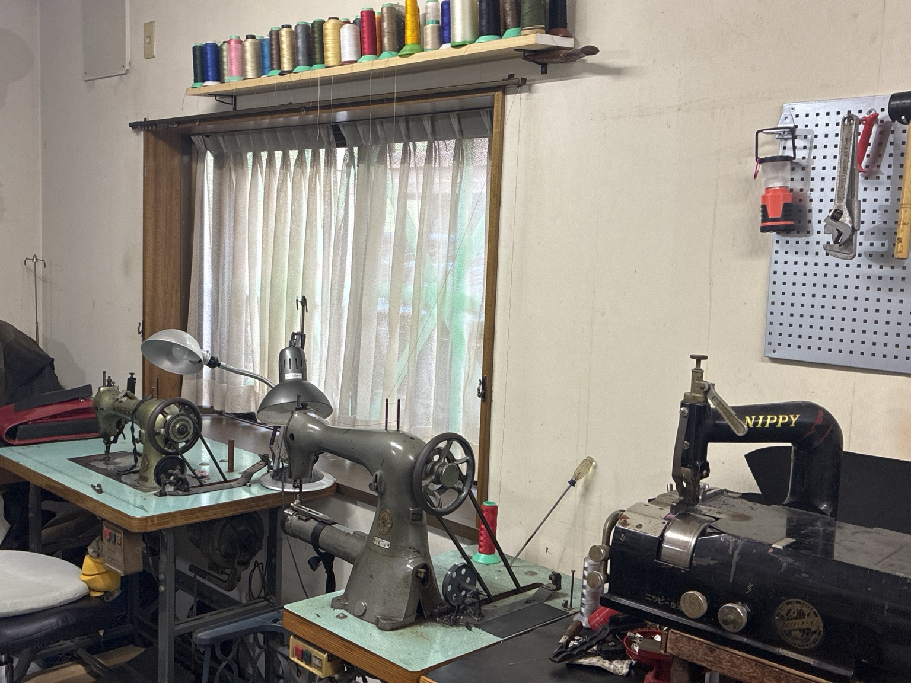
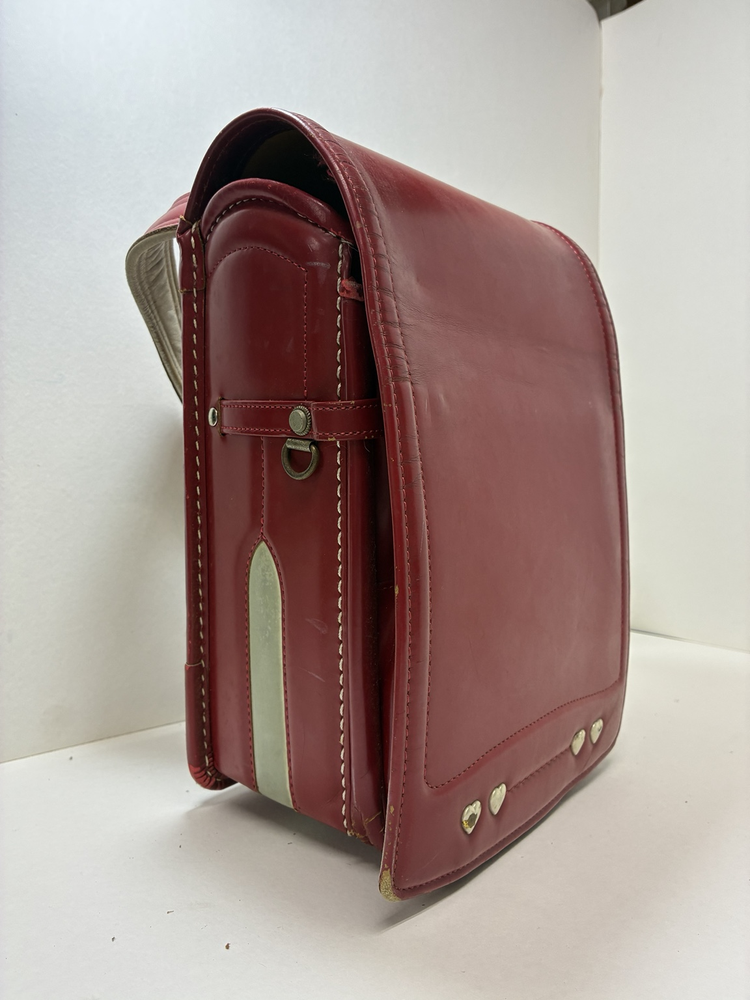
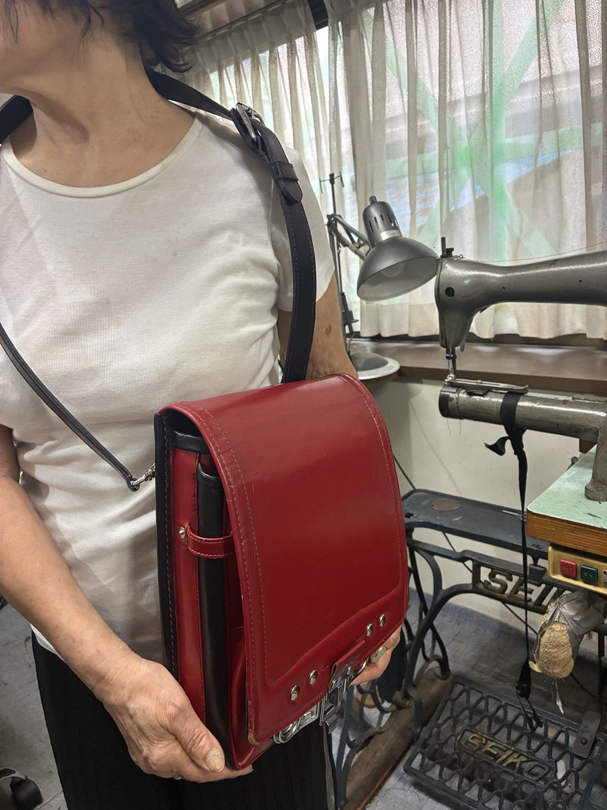
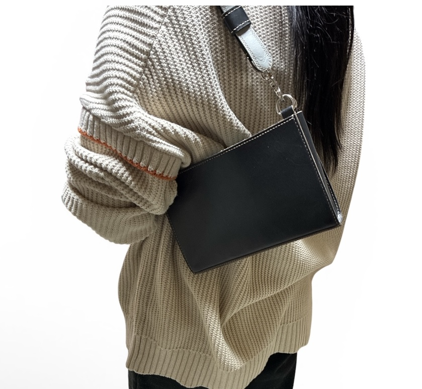
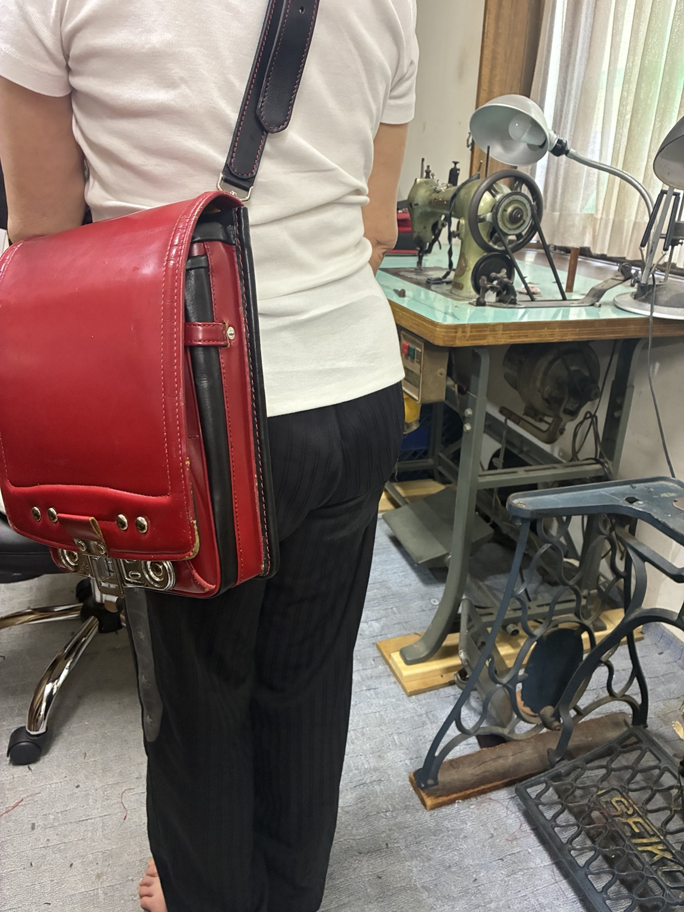
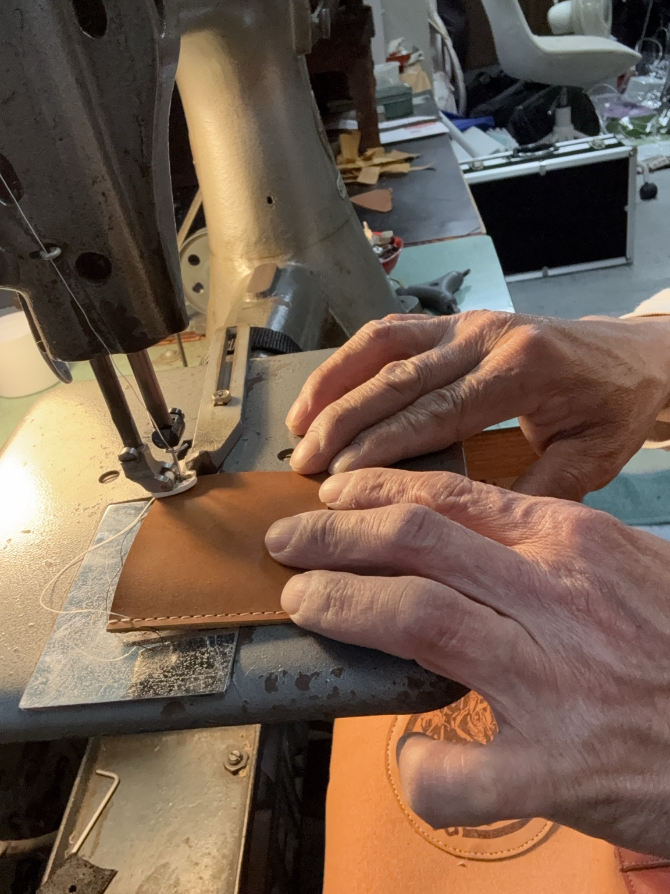

RANDOSERU REMAKE
ランドセルを、もう一度使える相棒へ。
6年間使った傷も、色つやも、その子だけの記憶です。池戸かばん工房では、元の面影を残しながら、ショルダーバッグとして使える形に仕立てます。
目安価格：30,000円〜40,000円
※状態・仕様・金具交換の有無により変わります。まずは写真を送ってご相談ください。

Before

After
親の代から受け継いだ技術で、ランドセルを次の相棒へ。池戸かばん工房は、長く使える革製品を一つひとつ丁寧に仕立てます。
大切なのは、ただ小物に分けることではありません。ランドセルらしさを残しながら、大人になっても持てるバッグへ仕立て直すこと。革の状態を見て、使える部分を選び、必要なところは新しい革で支えます。
6年間使った傷も、色つやも、その子だけの記憶です。池戸かばん工房では、元の面影を残しながら、ショルダーバッグとして使える形に仕立てます。
目安価格：30,000円〜40,000円
※状態・仕様・金具交換の有無により変わります。まずは写真を送ってご相談ください。

Before

After

思い出として保管するだけでなく、外へ持ち出せるバッグへ。厚みやベルトの長さも、実際の使いやすさを見ながら仕立てます。

革の硬さ、傷み、縫える厚みを手で確認しながら進めます。大量生産ではできない、一点ずつの調整が池戸かばん工房の仕事です。
流行を追いすぎず、使うほどに持ち主になじむ形を大切にしています。

長財布と携帯を入れて、身軽に出かけるための革バッグ。

厚みを整え、縫いやすさと仕上がりの美しさを両立します。
元の金具や革を活かしながら、これから使える形へ。

親の代から続く小さな革工房。年季の入ったミシン、並んだ糸、手になじんだ道具。ここで一つひとつ、革の表情を見ながら仕立てています。
生きている間は、修理します。
長く使うものだからこそ、作った後の付き合いも大切にしています。
ランドセルリメイク、革かばん、修理のご相談を承ります。
池戸かばん工房
岐阜県多治見市笠原町4024-385